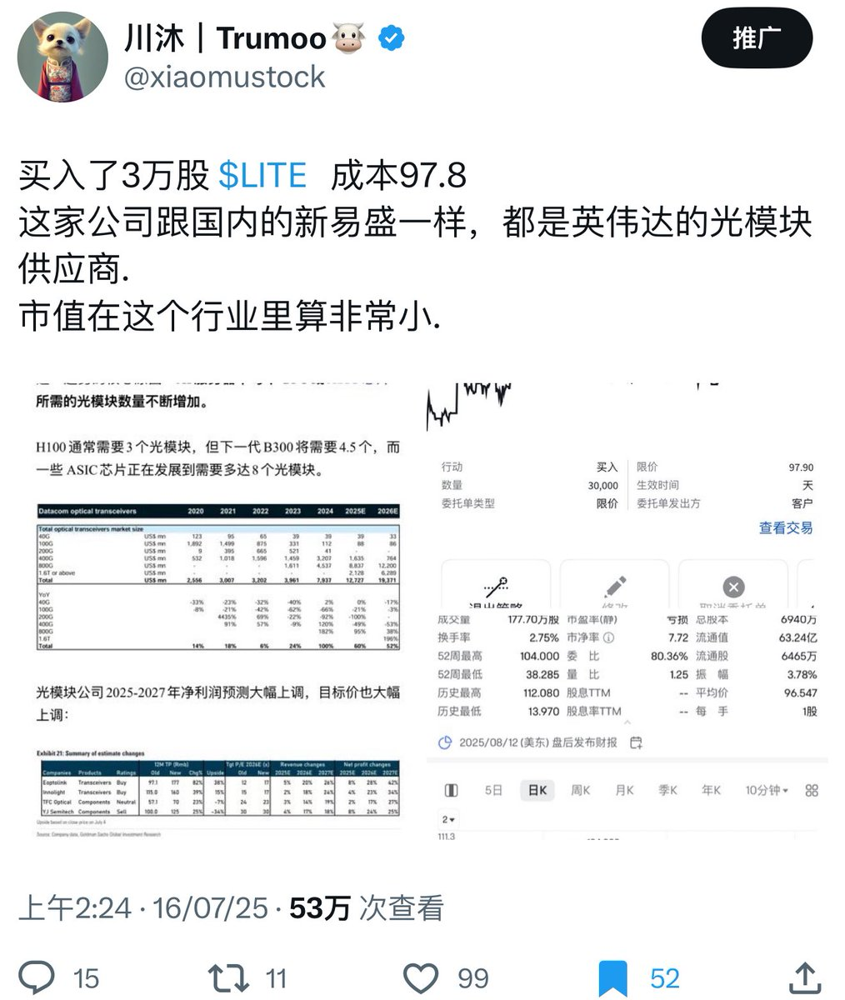
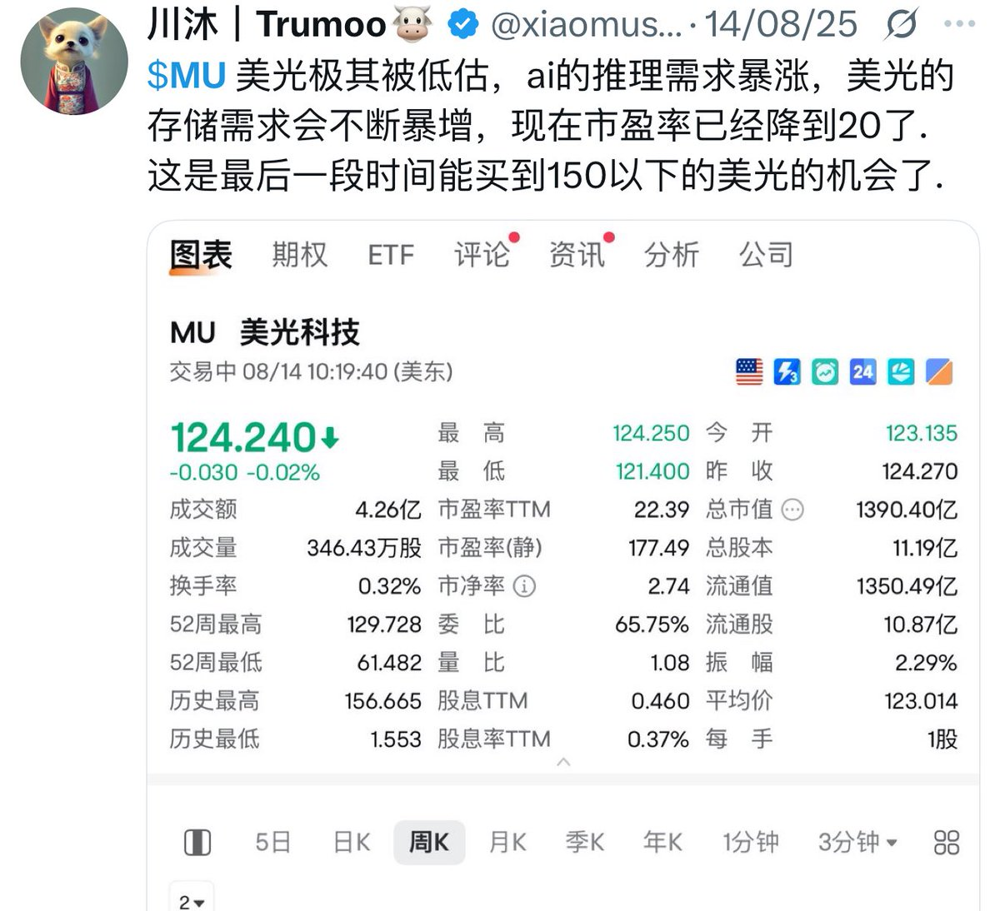
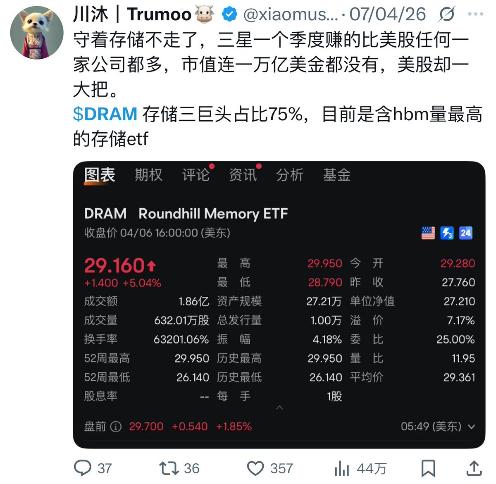
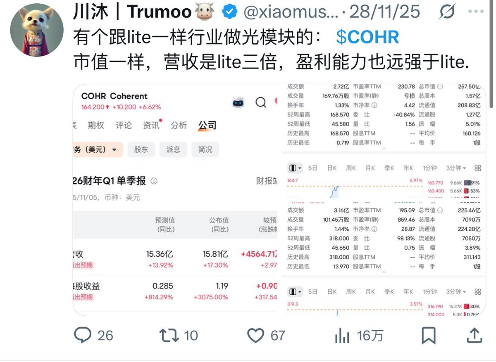
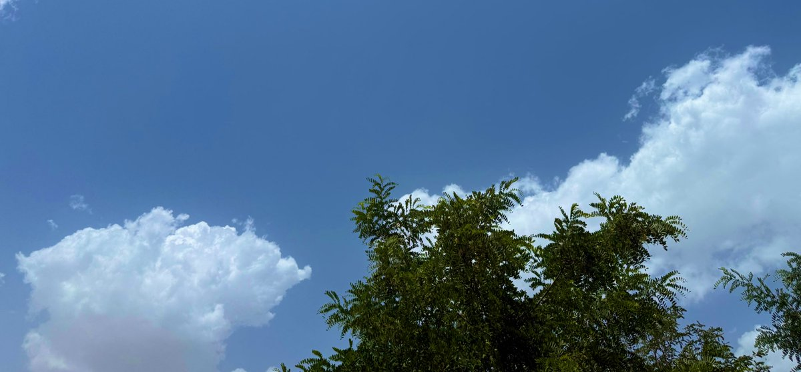

AI 算力狂飙与基础设施重仓：为什么不做只倒腾 QQ 的过客
- 2000年初沉迷于QQ网易邮箱等消费级应用的人，绝大多数错过了腾讯网易股票的万倍主升浪；AI时代切忌重蹈覆辙，不可只沉迷于倒腾AI工具与买各种会员。
- 资本市场最确定的暴利永远沉淀在底层不可或缺的硬算力、高端芯片与能源基础设施中，而不是表面喧嚣的应用层玩具。
- 在科技革命的奇点时刻，最底层的算力基建是全行业的唯一水喉，拥有不可撼动的垄断定价权与利润虹吸效应。
底层机制推演与交易实操解析
科技浪潮的财富分配呈现极度不均衡的金字塔结构。应用层初创企业面临百舸争流、相互踩踏的恶性竞争，且模型迭代速度极快导致护城河脆弱。相反，以英伟达算力芯片、台积电先进制程与美光/海力士存储构成的底层基础设施，构成了不可替代的物理刚需。无论最终哪一家AI模型胜出，都必须向底层芯片巨头持续缴纳巨额‘算力税’。因此，二级交易员的核心使命是识别并重仓不可替代的基础设施收税者。
在实盘落地执行层面，川沐确立了严密的纪律体系：【配置主线确立】将美股主仓位（50%~60%）始终锚定在底层芯片与半导体算力龙头，拒绝频繁调仓到概念型应用股。；【远离消费级噪音】评估AI公司时，重点看其真金白银的资本开支（Capex）流向何处，跟随巨头的支票簿做投资。；【周期与成长共振】在产业资本开支处于上升主升浪时坚决持仓，忽视短期盘口波动。。这一系列铁律的核心在于彻底消除主观情绪与盘口多动症，让每一笔下注都依托于高盈亏比的结构性优势。
在风控与生存哲学上，川沐反复强调致命避坑底线：“警惕把‘使用者狂欢’当成‘投资者赚钱’的思维盲区；消费工具的拥趸往往只是为巨头财报贡献营收的韭菜。”。在真金白银的搏杀中，活下来永远高于一切预期收益，保护本金不发生毁灭性损耗，是让复利飞轮持续旋转的前提。
川沐核心实战推特证据链
再整体记录一下上半年成功的操作。
$MRVL 爆拉前156刀推荐，35天最高329。
$MU 爆拉前118刀推荐，10个月最高1255
$LITE 爆拉前97刀推荐，10个月最高1085
$COHR 爆拉前164刀推荐，7个月最高440
#海力士 年初75万韩元推荐，6个月298万韩元
#中韩半导体 年初3.2推荐，6个月最高7.1
#五一世界 4月份47推荐，2月最高147
#2x海力士 年初23推荐，6个月最高193
$ewy 年初120推荐，6个月最高220
$DRAM 29美金推荐，3个月最高81
$GLW 康宁215推荐，7天最高271
除了上面所有，
今年买过最烂最失败的俩个就是港美互联网和nok，毕竟如果买的全暴涨那跟开挂有啥区别，有亏有赚才正常毕竟买的是股票不是玩的资金盘。
从半年前推特上没有几个中文推做股票，
到现在人人基本上做股票，
至少绝大多数人提前半年了解到存储应该我这个推特今年最大的意义。
这过程中有各种生物多样性的傻逼诋毁和嘲讽，2/3月份几乎拉黑屏蔽了所有我能刷到的看空存储的推，但这半年也有非常多朋友一直支持。努力让那些傻逼显的更傻逼。
人生得不断的承认错误，修正，
再对变化作出改变，
无尽重复，才能进步。
而不是顽固的固执己见，
汉语有关博大精深的词，
“观点”
并不是简简单单的看法，古人构词的时候真实想法应该是某一刻或者某一点的看法才叫观点。具有很强的时间点特征，不可能像物理定律一样，永远有效。
投资或者炒作都是基于“观点”这个词，
看到变化推出另外一种变化的方向来投资交易，非常具有时效性，而时效的长短跟变化本来的长短也直接挂钩。AI带来的变化则非常久远，但肯定也有对应的时效。
所以市场流传这样一段话
“要么早信要么坚决不信，
先信卖后信”
每次下撤暴跌亏惨的要么是信最晚的，
相当于49年入国军，溥仪下台入宫当太监。
要么是杠杆打满的，看得再对也承受不住市场的跳动。
做交易只能负责，所以非常厌恶别人问能不能买要不要卖，只想关心自己买没买啥时候卖。自己没有的也不想关心。
回归务实还是多关心关心家人和朋友。
希望老板们未来能看到一个更强的自己。




今天也算是半年过去，对自己上半年的惨痛交易也做个总结，
1.尽量买标品生意能流水线生产的或者互联网能直接复制产品的公司。
诺基亚这一俩个月俩回没啥起色，可能就跟它非标品的生意模式有关，基站啥的只能靠人力一点点干，搞土地搞关系搞人力搞供应链，苦力生意。
2.尽量买护城河极高，能参与公司极少的垄断公司垄断行业，湖南裕能这些就是对手多，无脑扩产的太疯狂，很难形成自己稳固的定价权。
3.自己没法掌控它实时仓过往业绩也不是特别好的etf或者lof少碰。当时5月初选港美互联网lof这个标是因为它持有美光和闪迪。如果基金经理完全按照一季度持仓加仓，则后续理论上表现会非常夸张，毕竟美光和闪迪在6月都涨了快50%，但真想不通这个傻逼经理在秀什么几把操作，后续价格走势完全跟美光和闪迪无关联。简直是盲盒交易。远不及中韩半导体这种etf持仓稳固，几个季度过去一直高比例持有三星海力士。
4.最重要最严重的错误，融资上杠杆。
差点在3月份爆仓死掉，2x海力士和ewy都暴跌差点没熬过去。以后再不去买超过自己本金的资产，顶多在自己本金范围内购买2x扩大上升周期的收益。
最沉痛的教训，当时3月的暴跌不仅吞噬了我1/2月份的收益，还直接巨亏打到了接近失去上桌的机会。
后续市场肯定还会有类似的波动，
比如真的加息来临，
比如市场承受不住大把的AI公司发债融资，
比如存储高价可能大幅抑制消费端需求，造成需求减弱，或者存储后期大幅度扩产引发降价等等。
总之市场会在我们意想不到的方式来一个黑天鹅来摧毁杠杆投资者，一俩个月风声过去，股市继续歌舞升平，全场新高，但与你无关。
